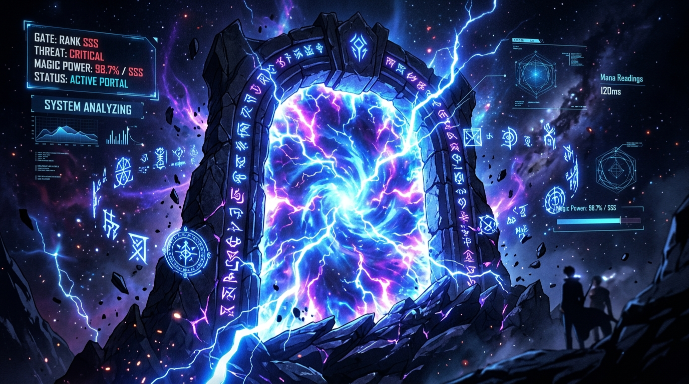
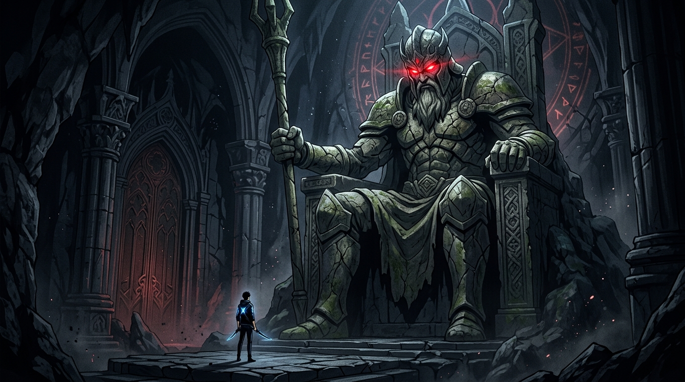
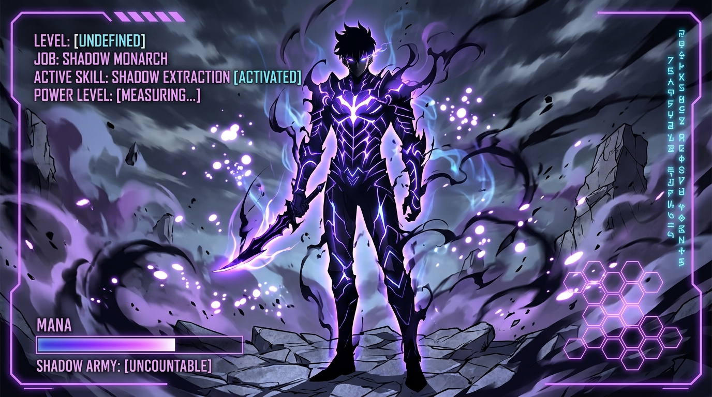

ARC 01
預言之王 · 無極限
我獨自成王
「他不是普通的獵人……他是真正的王，而且他的力量——根本沒有極限！」
在美國最高級別預言家賽諾夫人（諾瑪·賽諾）的占卜中，世間所有強者的潛力都有著清晰的天花板。唯獨在看透成振宇的靈魂時，她看見了無窮無盡的深淵與君王神格，親口承認他就是超越常理的唯一真王！

「世界已在魔物與門扉的衝擊下改變。弱肉強食是唯一的法則，唯有他打破了無法成長的宿命。從人類最弱兵器，到執掌數十萬不死亡者大軍，跨越無數次時光輪迴，獨自背負守護世界的終極神話。」
自從「門」開啟後，世界出現了覺醒超能力的「獵人」。獵人的等級從覺醒那一刻便被固定，無法更改——除了唯一能透過系統無限成長的特例。
最底層的覺醒者，魔力值僅略高於普通人類。哪怕是在最低階的「E級傳送門」中也隨時面臨生命危險，需要依靠超越常人的意志與智慧苟延殘喘。
「系統提示：進入地下城實戰關卡。親自操控成振宇，施展匕首連斬、瞬步殘影與暗影將軍合擊，突破生死絕境！」
「系統加持」打破了覺醒級別無法變動的鐵律。你可以像遊戲角色一樣，通過完成每日任務積累點數，任意分配屬性。
在普通獵人的覺醒上限已經固定的世界，您是唯一被「系統」選中並能持續升級的特例。每次升級都會重塑您的體質與肉體強度。
擊敗地下城高階魔獸後，您可以使用亡靈技能「提取影子」，將對方的靈魂收為您的不滅暗影部屬。影子士兵將隨著君王共同升級。
通過深淵關卡獲取頂尖匕首、短劍與龍牙兵刃，鑲嵌地下城符文之石獲得破甲、雷擊及隱形等神級主被動技能。
「10年前，世界與其他次元連接的『門』被打開，各種魔物不斷湧現，能力各異的獵魔者隨之覺醒，被稱為『獵人』。程肖宇（成振宇）本是實力最弱的E級獵人，卻在雙重地下城瀕死之際獲得唯獨他可見的升級系統，開啟了弒神成王、輪迴逆轉的浩瀚神話！」
全隊踏入雙重地下城被石侍與巨神像當菜砍，主角參透三大戒律於祭壇死中覺醒，成為唯一能打破成長極限的玩家。在罰時沙漠狂奔練就鋼鐵身軀，反殺背叛隊長黃東石。創立公會原本取名『單身公會』被劉晨浩吐槽改名『嘯牙 (Ahjin)』，S級車海印臉紅求入會，晨浩名媛表姊劉蘇嫻湊齊三人。隨後濟州島空降暴打天災蟻王，提取真名『貝爾』！
妹妹高中美術室突發紅門獸人屠戮，主角瞬步撕裂空間破空救妹，留在地下城的影之螞蟻僅憑自身就將高階怪物全滅！獲得協會會長高建利破例授予的『單人高級地下城攻略特權』展開深海大屠殺收服雙叉戟『芝麻』。手持漆黑未知鑰匙重回卡特農神廟，體內長出第二顆暗影黑心臟搞出系統Bug反噬吞噬系統，將邪神巨像與設計者建築師徹底斬滅！
日本S級傳送門百米巨人肆虐，主角隻身赴日拯救日本滅殺被鎖鏈禁錮的始祖巨人『太祖萊吉亞』。受邀赴美參加國際獵人峰會，叛徒黃東樹綁架虐待劉晨浩找死，世界最強國家級獵人托馬斯·安德烈親自保人，被主角按在地上瘋狂摩擦暴打！主角當場處決黃東樹提取為『無厭 (Greed)』，托馬斯心悅誠服贈予巨龍尖牙神器『卡米什的狂怒』雙短劍！
摩天輪約會後火速馳援戰場獨戰三大君王怒斬瘟疫，心臟被穿假死於病房幻象甦醒，初代君王阿斯木親自上歷史課講述創世神絕對者與輪迴之盃倒轉秘辛，真王以人類肉身完全覺醒，父親程日翰動用神力後化灰消散。首爾黑門開啟阿斯木數十萬原始大軍齊刷刷下跪迎王，收服總軍團長伯利昂。破滅龍帝加拿大調虎離山，主角結合支配者神罰長槍徹底轟殺龍帝！最終啟動輪迴之盃倒轉十年，於次元裂縫苦戰27年斬盡君王，締造世人無人知曉其名的和平世界！
從被視為最卑微的「人類最弱兵器」，到創立嘯牙公會、屠戮深淵、斬殺太祖君王、擊潰國家級獵人，乃至在次元裂縫中獨自成神。完整見證成振宇登頂宇宙王座的宿命歷程！
在美國最高級別預言家賽諾夫人（諾瑪·賽諾）的占卜中，世間所有強者的潛力都有著清晰的天花板。唯獨在看透成振宇的靈魂時，她看見了無窮無盡的深淵與君王神格，親口承認他就是超越常理的唯一真王！
為了獲得自由攻略高級傳送門的特權，成振宇決定自創公會。起初取名『單身公會』被富二代劉晨浩吐槽，最終更名為『嘯牙公會』。S級女獵人車海印聞訊前來考核一臉想入會，劉晨浩的名媛表姊劉蘇嫻也順利加入湊齊三人門檻！
妹妹成珍雅的高中美術室突發高階紅色傳送門，嗜血獸人魔物血洗校園。正在攻略遠方地下城的成振宇感應到妹妹影中的暗影護衛警報，立刻拋下眼前地下城以極速瞬步破空趕到妹妹面前！而他留在地下城的影子士兵螞蟻，僅憑自身就將地下城魔物全數虐殺殆盡！
獵人協會會長高建利深知成振宇的驚世戰力，破例授予他前所未有的「單人攻略高級傳送門特權」。成振宇自此展開瘋狂的單人刷本升級大屠殺，並在深海高難地下城中力克雙叉戟兇暴魚人首領，將其收服為影之突擊隊長——「芝麻 (Jima)」！
成振宇手持漆黑的未知鑰匙，重回宿命的起點——卡特農神廟（雙重地下城）。系統設計者（神像建築師）試圖將主角當作暗影君王降臨的容器，卻驚愕發現主角體內不知何時孕育了第二顆「暗影心臟」，導致系統產生Bug被反向吞噬！成振宇揮刃將邪神巨像與設計者徹底斬殺！
日本東京上空爆發S級超巨型傳送門，百米巨人魔物肆虐，日本頂尖獵人全軍覆沒。成振宇單槍匹馬跨海赴日，隻身屠滅巨人軍團。深入傳送門核心後，他拒絕被利誘，一刀斬殺被鎖鏈禁錮的「始祖巨人君王·太祖萊吉亞」，並得知了九大君王與光明支配者永恆對立的創世秘辛！
成振宇受邀赴美參加國際獵人會議，參觀第一巨龍「卡米什」骸骨。叛逃S級獵人黃東樹趁機綁架凌虐富二代劉晨浩，成振宇暴怒降臨，世界頂尖「清道夫公會」國家級獵人托馬斯·安德烈親自出面阻攔。成振宇隻手將不可一世的世界最強托馬斯按在地上瘋狂摩擦，並處決黃東樹提取為影之將軍——「無厭 (Greed)」！
身懷「最璀璨光輝碎片」的獵人協會會長高建利遭酷寒君王刺殺殞落。被主角打服的托馬斯前來致敬，將巨龍之牙神器「卡米什短劍」贈予主角。隨後百獸君王突襲，此時成振宇正與車車在遊樂園約會，托馬斯苦撐不敵，主角及時趕到隻身扛起戰局，面對百獸、酷寒、瘟疫三大君王圍毆，絕境中怒斬瘟疫君王！
主角被百獸君王刺穿心臟假死，於病房無限幻象中甦醒。初代暗影君王阿斯木現身上歷史課：創世神「絕對者」創造光明碎片（支配者）與黑暗碎片（君王）永恆廝殺；地球早已被當戰場毀滅過無數次，全靠支配者使用『輪迴之盃』倒轉時光！阿斯木將全部神力託付主角，真王復甦重回人間；父親程日翰動用光明碎片神力最後道別後化灰消散……
韓國上空浮現超巨型黑色傳送門，全世界陷入絕望。然而從門扉中踏出的，竟是初代暗影君王阿斯木沉睡的原始軍團——整整數十萬名身經百戰的不死暗影大軍！全軍見到成振宇齊齊下跪高呼吾王！統領這支浩瀚大軍的，正是手握千節蜈蚣長劍的影之總軍團長「伯利昂 (Bellion)」，主角瞬間執掌宇宙最強軍勢！
地球上空8個巨型傳送口即將破滅，成振宇通告全球人類遠離撤離。主角奔赴中國防守卻遇敵方「調虎離山空城計」，邪惡最強「破滅君王·龍帝安塔利斯」於加拿大降臨大肆破壞！成振宇急速折返，斬殺幻界君王與金剛君王，最後結合支配者們神罰光矛徹底擊潰破滅君王龍帝！
主角對人間滿目瘡痍的結局不滿意，要求支配者啟動『輪迴之盃』讓時光倒轉十年。成振宇孤身一人踏入次元裂縫歷經27年苦戰，將所有君王逐一斬草除根，締造了一個沒有傷亡、沒有魔力與獵人的安寧地球。雖然他是世界最強、獨自守護了全人類，但世上無人知曉他的名字，首尾呼應將『獨自』的悲壯宿命推向神話巔峰！
「在死神的權柄之下，死亡不再是靈魂的終點，而是絕對忠誠的開端。每一次君王的低語，都伴隨著黑霧沖天與天崩地裂的誓言。」
在暗影君王的掌控中，殺戮只是服從的開始。從雙叉戟魚人芝麻、狂暴將軍無厭，到總軍團長伯利昂與數十萬原始大軍，誓死為君王而戰！
初代暗影君王阿斯木座下第一戰神。背生巨大雙翼，手握千節蜈蚣巨劍，統帥數十萬原始暗影軍團，戰力冠絕全軍！
前血色指揮官，忠誠與榮譽的化身。精通雙手大劍與雷電神速斬擊，永遠第一個單膝下跪聽候君王敕令。
濟州島天災蟻王，撕裂雙爪與超音波尖嘯的天花板級破壞力。性格傲嬌卻極度敬仰君王，喜好觀看肥皂劇學習人類語言。
於美國峰會折磨劉晨浩後被成振宇處決提取。身軀籠罩血煞黑焰，近身肉搏狂暴兇殘，專司前鋒破陣重擊。
高階深海傳送門BOSS魚人首領。身形可自由巨大化，手持雙柄三叉戟引動海嘯狂潮，為軍團橫掃敵陣。
手持紅寶石法杖的半獸人首領。能施展重力屏障、增幅火焰龍捲與全軍嗜血 Buff，是君王最仰賴的群體法術重炮。
惡魔王巴蘭坐騎轉化的雙翼飛龍。環繞暗黑雷暴在天際極速巡航，載乘君王以音速俯衝戰場。
原A級獵人金哲背叛後提取。揮舞重錘與塔盾發動「挑釁怒吼」，吸引敵方全體火力，堅如磐石。
當黑色迷霧充斥視網膜，對抗死亡的核心意志即將迸發。現在釋放暗影能量！
創世神「絕對者」將宇宙分裂為光明與黑暗兩大勢力，命其無休止殺戮。地球被夾在神魔神戰之間毀滅過無數次，全憑『輪迴之盃』倒轉時光。
創世神自光明中切割出的神聖戰士。為了保護脆弱的地球不被君王軍團毀滅，他們借用人類肉身降下「最璀璨光輝碎片」，並透過神具『輪迴之盃』一次又一次倒轉時光，試圖尋找拯救地球的方法。
創世神自黑暗中誕生的毀滅意志。視殺戮為存在唯一的意義，率領無窮魔獸大軍跨越次元傳送門吞噬凡間。最強者為破滅君王（龍帝安塔利斯），其吐息足以燒盡大洋與大陸。
初代暗影君王阿斯木原為支配者中的大哥，因同袍背叛轉投君王，又遭君王背叛重創。他看中了成振宇在死亡絕境中展現的鋼鐵意志，將全部暗影本源託付於他。成振宇以人類肉身承載真神神格，最終在次元裂縫中孤身蕩平所有君王，超越光明與黑暗，成為宇宙唯一的救世孤神！
世上人數最精簡、戰力最恐怖的公會。見證那些陪伴成振宇走過生死之戰的摯友與同袍！
全人類唯一能無限成長的獵人。掌控數十萬不死暗影軍團，獨自一人扛下滅世神戰。
從最初被拯救便全心追隨成哥。全權打理嘯牙公會一切繁瑣事務與法律門檻，即使遭酷刑凌虐也絕不背叛成哥。
擁有獵人執照的知名名媛。為了幫助晨浩湊齊公會成立法定的三人門檻而加入嘯牙公會，成為公會門面擔當。
嗅覺敏銳的S級女劍聖，唯獨在成振宇身旁能聞到舒適清香。遊樂園摩天輪約會名場面，最終與成振宇結為神仙眷侶。
成振宇最尊敬的長輩。力排眾議授予主角單人攻略特權，臨終前將人類命運託付給主角，英勇殞落。
身軀無敵的世界最強肉盾。被成振宇按在地上摩擦後打服，親自贈予卡米什短劍，在首爾戰役中捨命替主角扛戰。
在地下城失蹤多年的父親。為保護覺醒中的兒子隻身阻擋君王，動用全部光輝碎片神力後，在兒子懷中化灰消散。
精巧而極富殺傷力的短刃是影之君王的首選。這些神兵利器為每一次暗影揮擊提供致命的穿透力。
托馬斯·安德烈致贈。使用傳奇巨龍「卡米什」最銳利的尖牙熔鑄的雙短刃。蘊含極致龍威，能撕碎世間萬物防禦。
戰勝惡魔王巴蘭的戰利品。雙手持有能大幅度增加敏捷，並引動狂暴雷擊。
由高級獵人公會研發的穿甲匕首。專為對付重鎧甲魔物或巨力首領設計。
在生與死的狹隘邊際，神魔之間的殘酷試煉在此演繹。一瞥影之君王崛起的史詩戰歌。


全球各大漫畫平台累計瀏覽次數，締造跨國界神話里程碑。
2024年震撼開播，由澤野弘之等頂級製作團隊傾力呈現。
高品質連載內容，以細緻的分鏡與震撼格鬥張力備受讚譽。
全球動漫與輕小說評價平台，萬千擁躉聯合給出的巔峰讚賞。